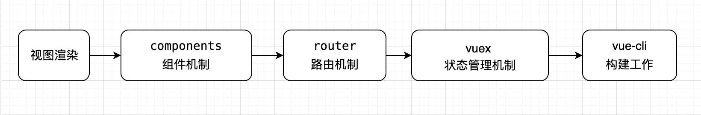
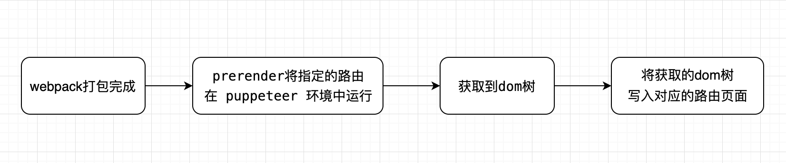

vue 渐进式
先简单回顾一下 vue 技术栈，在渐进式（对使用者的要求，逐渐添加）的思想上我们可以逐渐添加Components、Vue-Router、Vuex，它们之间相互独立，互不影响
渐进步骤：

下面介绍几种常见的vue seo方案：
实现方案
简单html
毫无疑问，即按照最简单的html书写方式，一个页面即一个html，多见于一些后端同学编写的后台系统页面。本质上和vue没有多大关系，对于前端同学，此种方案几乎不考虑。
prerender-spa-plugin
对于使用 vue-cli 初始化的项目，如果只是需要改善少数营销页面（例如 /，/about，/news）的SEO，那么可能预渲染（prerender）更加适用。无需使用 web 服务器实时动态编译 HTML，而是使用预渲染方式，在构建时 (build time) 简单地生成针对特定路由的静态 HTML 文件。
我们可以使用 prerender-spa-plugin 轻松地添加预渲染。只适用于 history 模式，hash 不可用。
工作流程如下：

使用方式如下：
初始化 vue-cli 脚手架
安装插件
1
npm i prerender-spa-plugin -S
注：插件内置安装了
puppeteer，所以安装过程比较慢修改main.js
1
2
3
4
5
6
7
8new Vue({
el: '#app',
render: h => h(App),
mounted () {
// You'll need this for renderAfterDocumentEvent.
document.dispatchEvent(new Event('render-event'))
}
})应用插件
build/webpack.prod.conf.js添加插件：1
2
3
4
5
6
7
8
9
10
11
12
13
14
15
16
17
18
19
20const PrerenderSPAPlugin = require('prerender-spa-plugin')
const Renderer = PrerenderSPAPlugin.PuppeteerRenderer
// prerender
new PrerenderSPAPlugin({
// 生成文件的路径，也可以与webpakc打包的一致。
// 下面这句话非常重要！！！
// 这个目录只能有一级，如果目录层次大于一级，在生成的时候不会有任何错误提示，在预渲染的时候只会卡着不动。
staticDir: path.join(__dirname, '../dist'),
// 对应自己的路由文件，比如index有参数，就需要写成 /index/param1
routes: [ '/', '/user' ],
renderer: new Renderer({
inject: {
foo: 'bar'
},
headless: true,
// 在 main.js 中 document.dispatchEvent(new Event('render-event'))，两者的事件名称要对应上
renderAfterDocumentEvent: 'render-event'
})
})为了更方便的测试dist
1
npm i http-server -S
再添加scripts:
1
"serve": "http-server ./dist"
更好的SEO
vue-meta-info
main.js:
1
2
3import MetaInfo from 'vue-meta-info'
Vue.use(MetaInfo)组件中：
1
2
3
4
5
6
7
8
9
10
11
12
13
14
15export default {
metaInfo: {
title: '我是一个title',
meta: [
{
name: 'keywords',
content: '关键字1,关键字2,关键字3'
},
{
name: 'description',
content: '这是一段网页的描述'
}
]
}
}
ssr
与传统的SPA（Single-Page Application - 单页应用程序）相比，服务端渲染（SSR）的优势主要在于：
- 更好的SEO
- 更快的内容到达时间（time-to-content）
使用服务端渲染（SSR）时还需要一些权衡之处：
- 开发条件有限。浏览器特定的代码，只能在某些生命周期钩子函数（lifecycle hook）中使用，一些外部扩展库（external library）可能需要特殊处理，才能在服务端渲染应用程序中运行。
- 涉及构建设置和部署的更多要求。与可以部署在任何静态文件服务器上的完全静态单页面应用程序(SPA)不同，服务器渲染应用程序，需要处于 Node.js server 运行环境。
- 更多的服务器负载。在 Node.js 中渲染完整的应用程序，显然会比仅仅提供静态文件的 server 更加大量占用 CPU 资源(CPU-intensive - CPU 密集)，因此如果你预料在高流量环境(high traffic)下使用，请准备相应的服务器负载，并明智地采用缓存策略。
在对你的应用程序使用服务器端渲染(SSR)之前，你应该问的第一个问题是，是否真的需要它。这主要取决于内容到达时间(time-to-content)对应用程序的重要程度。例如，如果你正在构建一个内部仪表盘，初始加载时的额外几百毫秒并不重要，这种情况下去使用服务器端渲染(SSR)将是一个小题大作之举。然而，内容到达时间(time-to-content)要求是绝对关键的指标，在这种情况下，服务器端渲染(SSR)可以帮助你实现最佳的初始加载性能。
vue官方对于ssr方案提供了集成的框架 nuxt.js，下面介绍nuxt.js。
nuxt.js
nuxt.js 提供了两种模式，一种 generate 静态化模式，一种 build node渲染模式。
generate模式
generate 本质上是提前将vue组件的内容编译输出到对应的html中，属于前置输出，适用于静态化的网站，只有一些简单的文字内容，搭配一下简单的接口（接口无需seo）。
另外不适用与动态路由，如/news/1234567，1234567为动态id，因为想用访问/news/1234567，就必须提前输出这个html页面。部分网友提供解决方案，在执行 npm run generate 的时候通过请求获取id list，然后输出html。其实仔细思量后会发现这种方案几乎不可用，对于绝大多数网站，都存在登录态鉴权的问题，无法实现生成html。
对于这种复杂的应用场景，我们可以采用nuxt.js node渲染模式，如下：
build模式
对于需要频繁的接口请求，并且需要针对首屏数据做服务端渲染时，可以选用nuxt.js build模式，输入后置输出，再请求页面的时候，node层动态生成内容返回。
本地开发时执行 npm run dev，本地开发完，先执行 npm run build，生成编译文件，也可以选择在服务器端执行 npm run build，然后在服务器端执行 npm run start，启动服务。